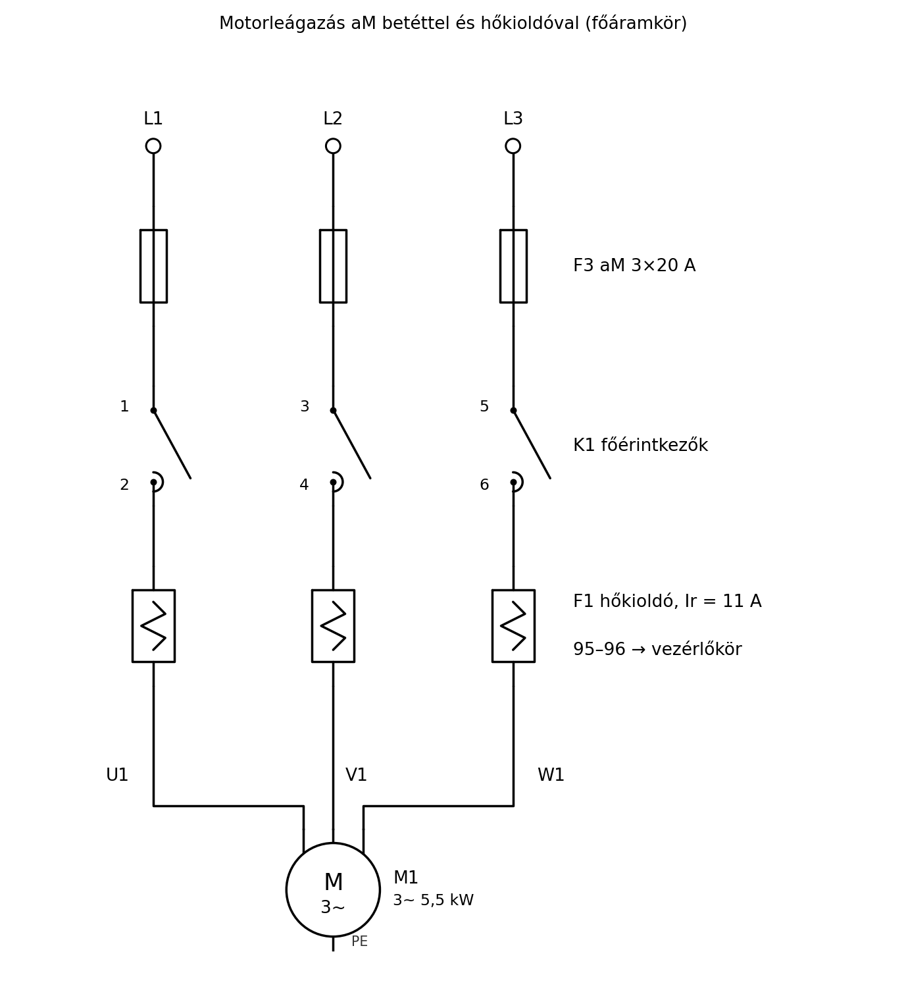

A kapcsolódó elmélet: tankönyv, 18.1 alfejezet.
A vezetékvédelem alapfeltétele a teljes könyvben használt:
ahol
az üzemi áram,
a védőkészülék névleges árama,
a vezeték terhelhetősége. Emellett a zárlati áramnak kisebbnek kell
lennie a biztosító kapcsolóképességénél, és a túlterhelési feltételnek
is teljesülnie kell:
(ellenőrizendő: MSZ HD 60364-4-43), ahol
a védőkészülék szokásos kiolvadási (kioldási) árama. Kismegszakítónál
,
ezért ott
elég; gG betétnél
,
ezért
(pontosabban
).
Számítás 1. Világítási áramkör biztosítójának
kiválasztása.
Adott: 230 V, a fogyasztók összteljesítménye
,
a világítási áramkör vezetéke 1,5 mm² réz, falba vésve.
Keresett: megfelelő gG biztosító névleges árama.
Az üzemi áram:
A vezeték terhelhetősége a szerelési módtól függ, például 1,5 mm² réz,
közvetlenül vakolat alatt (C szerelési mód),
(ellenőrizendő: MSZ HD 60364-5-52 táblázata, Terhelhetőség,
melegedés és javítótényezők (tankönyv, 10.3)). Védőcsőben (B1
mód) az érték kb. 17,5 A, és ott a 16 A gG betét az
miatt már nem felelne meg, a B16 kismegszakító igen. Válasszunk
gG 16 A betétet:
,
tehát a feltétel teljesül.
Ellenőrzés:
,
ezért a vezetéket túlterhelés ellen is védi.
Számítás 2. Várható zárlati áram és
kapcsolóképesség.
Adott:
,
a mért hibahurok-impedancia a lakáselosztónál
.
Keresett: a várható zárlati áram és a biztosító minimális
kapcsolóképessége.
A zárlati áram:
A D-rendszerű gG betétek megszakítóképessége jellemzően 50 kA, az
NH-betéteké 100–120 kA (ellenőrizendő: MSZ EN 60269 és gyártói
adatlap); a kismegszakítóké jellemzően 6 vagy 10 kA. A 489 A
jóval kisebb, tehát a betét megszakítóképessége bőven elegendő. Az ipari
NH késes biztosítók nagy megszakítóképességűek, ezért az elosztóban a
főágakban gyakran azokat alkalmazzák.
Számítás 3. Az átengedett Joule-integrál
().
Adott: gG 16 A biztosító, a várható zárlati áram 160 A, a
görbe szerint a kiolvadási idő legfeljebb kb. 0,09 s (a sáv felső
széle); a felső sávszéllel számolunk, mert a vezeték szempontjából ez a
kedvezőtlenebb eset.
Keresett: az
érték.
Ez azt jelenti, hogy a biztosító legfeljebb ekkora Joule-integrált enged
át a vezetékre, mielőtt megszakad. Ezt az értéket kell a vezeték
megengedett
-jével
és a kismegszakítóval összevetni a Kismegszakítók
és kioldási jelleggörbék (B, C, D) alfejezetben.
Az aM betét helye a motorleágazásban. A
motorleágazásban az aM betét elöl, a mágneskapcsoló előtt
ül, a hőkioldó pedig a mágneskapcsoló és a motor között:

1. feladat (A). Határozd meg egy 230 V-os, 1,8 kW-os mosógép üzemi áramát. Válassz gG biztosítót, ha a vezeték terhelhetősége 16 A.
2. feladat (A). Rajzold le egyszerűen egy olvadóbiztosító jelét, és írd le, hova kell kötni a fázisvezetőben.
3. feladat (B). Egy elosztóban a hibahurok-impedancia 0,36 Ω. Számítsd ki a várható zárlati áramot. Ellenőrizd, hogy egy 50 kA névleges megszakítóképességű D-rendszerű gG betét megfelel-e (jellemző gyártói érték, ellenőrizendő).
4. feladat (B). Egy 25 A-es gG biztosítónál 250 A zárlati áram esetén a kiolvadási idő (illusztratív adat; ellenőrizendő: gyártói görbe) kb. 0,02 s. Számítsd ki az értékét. Miért fontos ez a vezeték méretezésénél?
5. feladat (C). Egy 16 A gG biztosítót 1,5 mm² réz vezeték védelmére választottak. A vezeték terhelhetősége 19,5 A. Ellenőrizd, hogy a biztosító megfelel-e a vezetékvédelem alapfeltételének, ha az üzemi áram 12 A. Mutasd meg a túlterhelési feltétel ellenőrzésével (), hogy a biztosító kiolvad, mielőtt a vezeték melegedése kritikus lenne (a 19,5 A a közvetlenül falon/falban vezetett, C szerelési módra vonatkozik; ellenőrizendő).
6. feladat (D). Egy műhelyben a gG 32 A késes biztosító ismételten kiolvad, ráadásul már normál indításkor is. A mért áram indításkor 180 A, üzemben 20 A. Melyik biztosítót választanád, és miért? (Tipp: ne csak a névleges áramot nézd, hanem a jellegét is.)
Szabály. Feltétel:
és
.
A gG betét szokásos kiolvadási árama
(16–63 A), 4 A és 16 A között
(ellenőrizendő: MSZ EN 60269-1). Választható betétek:
6, 10, 16, 20, 25, 32, 35, 40, 50, 63 A. Az
értékek tanulási példák (ellenőrizendő: MSZ HD
60364-5-52).
Önellenőrzés – válaszok: 1. Hamis. A gG teljes vezetékvédelem: túlterhelésnél és zárlatnál is véd; az aM csak zárlatvédelem. 2. . 3. Mert a vezeték terhelhetősége (pl. 1,5 mm² esetén kb. 17,5–19,5 A a szerelési módtól függően) kisebb, mint 25 A, így a biztosító nem védi a vezetéket túlterhelés ellen, és a vezeték melegszik. 4. A gG túlterhelésre és zárlatra is kiold, az aM a motorindítási áramot elviseli, csak zárlatra véd. 5. NH-betétcserélő markolattal (a betét fogófüleibe akad; alkarvédő mandzsettával és szigetelő védőkesztyűben), kizárólag leválasztott, feszültségmentesnek ellenőrzött aljzatból; a markolat nem teszi megengedetté a feszültség alatti cserét. 6. A kvarchomok az ívet hűti és oltja, ezért nagy zárlati áramot is képes megszakítani.
1. feladat (A).
.
Válasszunk gG 10 A-t, mert
,
és a túlterhelési feltétel is teljesül: a 10 A-es betét szokásos
kiolvadási árama a 16 A alatti tartományban nagyobb szorzóval számolandó
(≈
1,9·)
(ellenőrizendő: MSZ EN 60269-1), tehát
.
A gG 16 A nem felelne meg:
(gG betétnél, 16–63 A között,
,
ezért
).
2. feladat (A).
A biztosító rajzjele hosszúkás téglalap, amelynek hossztengelyén
végigmegy a vezető vonala; a kivezetések a téglalap két rövidebb végén
csatlakoznak (MSZ EN 60617). A fázisvezető (L) elejére kötjük, a
fogyasztó felé a biztosító kimenete megy. A nullát és a PE-t nem
biztosítjuk.
3. feladat (B).
.
Az 50 kA megszakítóképességű betét bőven megfelel, mert 0,64 kA < 50
kA.
4. feladat (B).
.
Az
a Joule-integrál (A²s, nem energia): az
ellenálláson fejlődő hő
.
Ezt engedi át a biztosító a vezetékre; a vezeték megengedett
-je
ennél nagyobb kell legyen, hogy a szigetelés ne sérüljön. A
kismegszakítókkal való koordinációnál is használjuk.
5. feladat (C).
,
,
.
,
tehát az alapfeltétel teljesül.
A túlterhelési feltétel:
,
tehát a biztosító a vezeték melegedési határa előtt megszakít.
6. feladat (D).
Először a hiba okát keresd (a feszültségmentesítés öt szabálya szerint):
nincs-e mechanikai hiba (szorulás), nem túl hosszú-e az indítás, nem
öregedett-e a betét. Ha az indítás normális (180 A, néhány másodperc),
és a 32 A-es gG betét ezt nem viseli, motorvédelemre aM betét
választható (a motor névleges áramához, a gyártói táblázat szerint, pl.
aM 25 A vagy 32 A) hőkioldóval együtt; a vezetéket a hőkioldó
(túlterhelés) és az aM betét (zárlat) együtt védi, mert az aM
túlterhelésre nem véd.
Kidolgozott eset (példaadatok). Egy 4 kW-os szivattyú leágazásában három gG 16 A betét ül; a motor zúg és melegszik. A jogosult szerelő a betétek kimenetén L1–L3 között 400 V-ot mér, az L2-höz viszonyítva pedig mindkét irányban 400 V-nál jóval kisebb, kb. 230 V körül ingadozó értéket: az L2 kimenetén nincs hálózati feszültség, a járó motor „visszatáplál”. Feszültségmentesítés után a folytonosságmérés igazolja, hogy az L2 betét kiolvadt. A kiolvadás oka a motor kapocsdobozában egy laza, megégett kapocs, amely zárlatot okozott. Tanulság: a hőkioldónak a kétfázisú üzemben le kellett volna oldania, ezért a javítás után a beállítását és a működését is ellenőrizni kell.